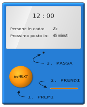
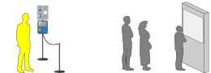
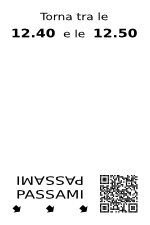
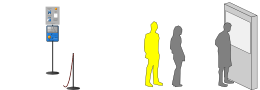
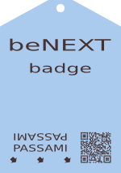
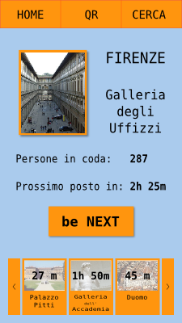

COS'E' BENEXT ?
Ti sara' senz'altro capitato di dover aspettare un'ora o piu' in coda per accedere
ad un certo servizio. Ad esempio per entrare in un museo, per una visita dal
medico di base o per arrivare allo sportello di un ufficio pubblico. Per alcune
persone queste attese sono una rara occorrenza, per altre una quotidianita'.
Certo e' non sono mai piacevoli, ed evitarle significherebbe risparmiare tempo
e passare giornate meno stressanti.
A tal proposito nasce ,
un sistema di gestione delle code che, grazie ad un ingegnoso metodo di prenotazioni
"last-minute", trasforma una fila di qualsiasi lunghezza in una da cinque
minuti (o meno).

Responsabile di questa straordinaria riduzione e' un semplice dispositivo
grande suppergiu' quanto una obliteratrice: il terminale .
Posto all'entrata delle strutture davanti alle quali si forma la coda,
esso regola l'ingresso degli utenti stabilendo un protocollo d'accesso.
Seguendo il protocollo gli utenti consentono al terminale di organizzare la
coda in modo da ridurre i tempi d'attesa.
Se cio' ti suona complicato non temere: la facilita' d'uso e'
uno dei capisaldi che hanno guidato la progettazione di
.
Esso si propone infatti come un sostituto al metodo
classico di organizzazione della coda, la fila, ed e' pertanto indispensabile
che si dimostri essere altrettanto semplice ed immediato, poiche' tutti devono essere
in grado si usarlo, dal bambino all'anziano.
Inoltre, sempre per soddisfare questo principio di universalita', e' essenziale
che sia privo di requisiti per l'utente. Egli puo'
persino non sapere cosa sia, ma riuscira'
comunque a servirsene e saltare cosi' la coda.
Andiamo ora a spiegare piu' nel dettaglio come funziona e soprattutto come si utilizza , esaminando tre situazioni in cui esso consente di evitare una lunga attesa.

IL BIGLIETTO
Proiettiamoci nella biglietteria della stazione ferroviaria di una grande citta' e dimostriamo con un esempio come puo' essere utilizzato in questo contesto.
Paolo, l'utente, deve riscuotere un rimborso dalle ferrovie. Si reca dunque alla suddetta biglietteria, luogo notoriamente affollato, con tempi di attesa che variano dai venti minuti all'ora e mezza. Supponiamo che Paolo arrivi alla stazione alle ore 12.00 e che, a quell'ora, si debbano aspettare 45 minuti per raggiungere lo sportello.
La gestione tradizionale della coda prevede il formarsi di una fila fisica di persone alla quale Paolo deve aggiungersi e che, dopo 45 minuti di lento avanzamento, lo fa giungere finalmente in testa, alle 12.45 appunto. La stazione ha pero' adottato il servizio . Arrivato dunque all'ingresso della biglietteria, Paolo trova il terminale visto in precedenza, fornito di un cartello con le seguenti istruzioni: 
Premi il pulsante
Ritira il biglietto
Torna all'orario indicato
Passa il biglietto davanti al terminale
(sentirai un suono di conferma)Accedi alla coda

Letto il cartello, Paolo preme allora il pulsante e ritira lo scontrino emesso dal terminale. Su di esso sono riportati un codice QR ed un'indicazione:
"Torna tra le 12.40 e le 12.50".
Il terminale ha memorizzato la prenotazione dell'utente, che verra' identificato attraverso il codice QR stampato sul biglietto. Paolo puo' ora allontanarsi dalla biglietteria e decide di sfruttare quei 40/50 minuti d'attesa per pranzare in un bar nelle vicinanze.
 Tra le 12.40 e le 12.50 Paolo si ripresenta all'entrata della biglietteria e passa il suo biglietto davanti al terminale che lo lascia accedere alla coda per lo sportello. Il vantaggio e' che tale coda e' di soli 5 minuti, contro quella di 45 minuti che l'utente avrebbe dovuto sorbirsi senza .
Come possiamo evincere dall'esempio, non riduce il tempo di attesa, che, dopotutto, dipende dal rapporto tra il numero di utenti ed il numero di sportelli. da' pero' all'utente una finestra temporale entro la quale gli e' garantito l'accesso, ed egli e' dunque libero di impiegare come meglio crede i minuti d'attesa, invece di essere costretto a mantenere un posto fisico nella coda.
IL BADGE
Se l'esempio della biglietteria ti ha convinto riguardo la convenienza e la semplicita' di , lascia che ti mostri come esso possa risultare, in determinate circostanze, ancora piu' utile, conveniente ed immediato da usare.
Prendiamo in considerazione la realta' di una grande citta' d'arte, ricca di musei, palazzi, parchi e, soprattutto, stracolma di turisti. Qui le lunghe attese sono una quotidianita'. Masse di visitatori aspettano ore alle entrate delle grandi attrazioni culturali in disordinate code chilometriche. Per mitigare la formazione di tali file ed offrire al turista un'esperienza piu' piacevole, la citta' ha deciso di adottare .
L'implementazione scelta in questo contesto e' un'estensione di quella vista in precedenza: presso le entrate di musei, palazzi e cattedrali vengono installati dei terminali , che regolano l'accesso alle strutture stabilendo la procedura gia' nota, attraverso la quale il visitatore puo' recarsi davanti al luogo d'interesse, premere il pulsante al terminale, ritirare il biglietto, presentarsi nell'intervallo indicato ed accedere alla brevissima coda.
 Viene inoltre offerta la possibilita' di acquistare un badge (immagine a fianco), che consente all'utente di effettuare la prenotazione presso una qualsiasi delle strutture servite da . Vediamo come.
Paolo veste ora i panni del turista, ed ha in programma la visita di una manciata di musei e palazzi nella nostra ipotetica citta'. Giunto sul posto si reca nella prima edicola che incontra, entra e chiede al rivenditore un badge . L'edicolante porge a Paolo il rettangolino plastificato, che costa - poniamo - cinque euro, e lo informa che, alla biglietteria del primo museo che visitera', mostrando il badge quei cinque euro verranno detratti dal prezzo dell'entrata.
Paolo si reca dunque ad uno dei musei in programma, davanti al quale trova il familiare terminale . Invece di premere il pulsante, Paolo passa il suo badge davanti alla macchinetta, che registra la prenotazione e stampa un biglietto sul quale e' indicato l'intervallo orario a cui l'utente deve tornare per accedere alla coda. Il bigliettino emesso dalla macchinetta questa volta non presenta il codice QR perche' ha solo la funzione di promemoria. L'utente viene infatti identificato dal codice impresso sul badge.
All'orario stampato sul biglietto, Paolo torna al museo, ripassa il suo badge davanti al terminale che lo lascia accedere alla coda per la biglietteria. Qui Paolo acquista il ticket d'ingresso, ottenendo la detrazione dovuta, e continua per il museo. Il tutto in poco piu' di 5 minuti. Senza avrebbe dovuto sopportare un'ora e mezza di coda.
L'APP
Nelle situazioni viste in precedenza l'utente, per effettuare la sua prenotazione al terminale , doveva recarsi fisicamente presso il terminale e premere il pulsante o passare il badge. Questa prenotazione rientra nella categoria di azioni che possono essere effettuate con facilita' da remoto utilizzando, ad esempio, uno smartphone. offre dunque questa possibilita' con un'app e un sito web, attraverso i quali e' possibile prenotarsi per una qualsiasi coda gestita dal sistema. Dimostriamo, ancora una volta attraverso un esempio, la semplice procedura per accedere ad una coda utilizzando l'app.
 Ritorniamo dal nostro amico Paolo in visita alla citta' d'arte. Dopo aver acquistato il badge , Paolo impugna il suo smartphone e lancia l'apposita applicazione, con la quale scansiona il codice QR impresso sul badge. L'app lo aggiunge cosi' alla rete di utenti di quella citta', e Paolo e' ora in grado di prenotare la visita ai musei direttamente dal suo telefono.
A prenotazione effettuata, l'app mostra l'intervallo orario entro il quale Paolo deve presentarsi per entrare al museo. Giunto all'ingresso, per accedere egli passa il badge identificativo come visto nell'esempio precedente o, in alternativa, scansiona attraverso l'app un codice QR che appare sul terminale . Dall'app verra' inviato tramite internet un codice di conferma al terminale, che consentira' a Paolo l'accesso.
Volendo Paolo puo' fare a meno del badge. Dall'app egli puo' infatti acquistare il biglietto d'ingresso al museo, operazione che gli da' diritto ad effettuare prenotazioni per tale visita. Dunque con il suo smartphone Paolo puo' acquistare, prenotare ed accedere ai musei, pinacoteche, gallerie etc. La tediosa e stressante attesa in fila viene dunque sostituita da un paio di tocchi del cellulare.
INDIEGOGO
Il "team" dedicato alla realizzazione di e' costituito da una persona, il sottoscritto.
Come tutti i progetti in fase di realizzazione esso non genera ancora un ritorno economico e sto pertanto raccogliendo fondi che mi permettano di poterlo portare a termine nel minor tempo possibile. Ho per questo deciso di rivolgermi ad indiegogo, una piattaforma di crowd-funding che consente a chiunque di sponsorizzare progetti come attraverso piccole donazioni.
I fondi raccolti verranno impiegati per:
- acquisto del materiale necessario alla realizzazione dei prototipi dei terminali
- retribuzione di professionisti esterni quali un designer, un UX-specialist, un progettista hardware etc.
- copertura spese per l'attivita' di promozione del prodotto (una volta realizzato)
Se cio' che propone ti ha colpito e vorresti avere la possibilita' di sfruttare i vantaggi che offre, puoi aiutarmi a realizzarlo contribuendo con una piccola somma alla pagina del progetto su indiegogo.
FAQ
Se hai qualsiasi domanda riguardo a , puoi mandarmi una mail all'indirizzo info@lastminutelines.com oppure compilare il form che trovi qui sotto. Saro' lieto di risponderti nel minor tempo possibile. Inoltre, le risposte alle domande piu' interessanti e popolari veranno pubblicate a questa pagina.
La domanda e' stata correttamente inviata. Grazie
TestoIndirizzo per la risposta
CHI SONO
e' un progetto portato avanti dal colui che vi scrive, Paolo Scanferla, che lavora a tempo pieno alla sua realizzazione.